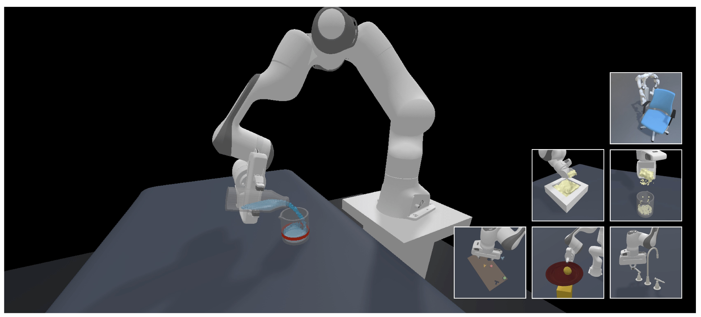

|
Yihe Tang
Hi, I'm Yihe.
I am an incoming Ph.D. student in Computer Science at the University of Southern California, where I will be working with Prof. Yue Wang. Previously, I received my M.S. in Computer Science from Stanford, where I'm honored to work with Prof.Jiajun Wu and Prof.Fei-Fei Li as part of the Stanford Vision and Learning Lab. I work on embodied agents, robot learning and simulation environments.
Before joining Stanford, I received my B.S. in Computer Science and Applied Mathematics from UC San Diego, where I worked with Prof.Hao Su.
Email /
Scholar /
Twitter /
Github
|
|
Research
My research goal is to develop robots capable of performing diverse household tasks. Towards this goal, I have been working on robust representations that leverage foundation models for generalizable manipulation. In the future, I am also interested in exploring cross-embodiment transfer and multi-modal sensing.
|
|
|
UAD: Unsupervised Affordance Distillation for Generalization in Robotic Manipulation
Yihe Tang*, Wenlong Huang*, Yingke Wang, Chengshu Li, Ruohan Zhang, Jiajun Wu, Li Fei-Fei
ICRA, 2025
CoRL Workshop on Language and Robot Learning, 2024 (Oral Talks)
CoRL Workshop on Mastering Robot Manipulation in a World of Abundant Data, 2024
project page
|
|
|
BEHAVIOR Vision Suite: Customizable Dataset Generation via Simulation
Yunhao Ge*, Yihe Tang*, Jiashu Xu*, Cem Gokmen*, Chengshu Li, Wensi Ai, Benjamin Jose Martinez, Arman Aydin, Mona Anvari, Ayush K Chakravarthy, Hong-Xing Yu, Josiah Wong, Sanjana Srivastava, Sharon Lee, Shengxin Zha, Laurent Itti, Yunzhu Li, Roberto Martín-Martín, Miao Liu, Pengchuan Zhang, Ruohan Zhang, Li Fei-Fei, Jiajun Wu
CVPR, 2024 (Highlight)
project page
/
arXiv
|
|

|
ManiSkill2: A Unified Benchmark for Generalizable Manipulation Skills
Jiayuan Gu†, Fanbo Xiang†, Xuanlin Li*, Zhan Ling*, Xiqiang Liu*, Tongzhou Mu*, Yihe Tang*, Stone Tao*, Xinyue Wei*, Yunchao Yao*, Xiaodi Yuan, Pengwei Xie, Zhiao Huang, Rui Chen, Hao Su
ICLR, 2023
project page
/
arXiv
|
|